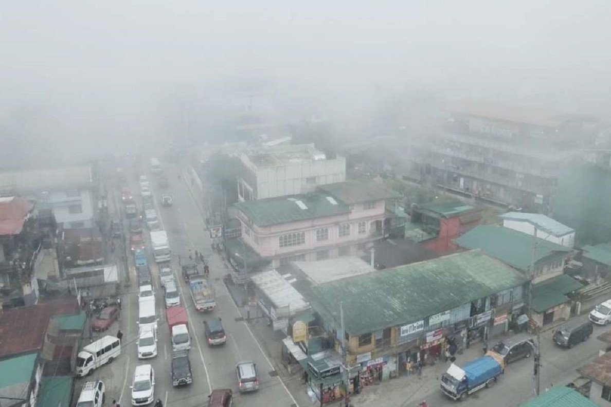

Published January 30, 2024
Benguet recorded the coldest temperature in the Philippines, by far, on January 29, 2024 at 9.7 degrees Celsius. Colder temperatures can be expected in the days to come.
According to the Philippine Atmospheric, Geophysical and Astronomical Services Administration (PAGASA), the peak of the cold weather is yet to be experienced.
"Yung mararamdaman natin na malamig na panahon ay magtutuloy pa at ang peak ay sa February," Engr. Larry Esperanza, the Chief Meteorological Officer at PAGASA Baguio City Station, said.
Residents in Benguet used different ways to stay warm in the cold.
"Doble doble na ang kumot ko, comforter na ang ginagamit ko pero ramdam na ramdam pa rin [ang lamig] kaya naka medyas na ako," Lourdes Arnidoval, from Tuba, Benguet, said.